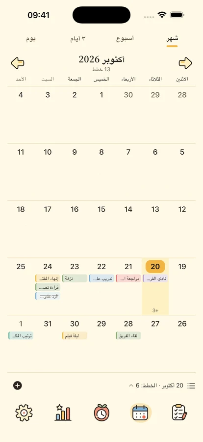
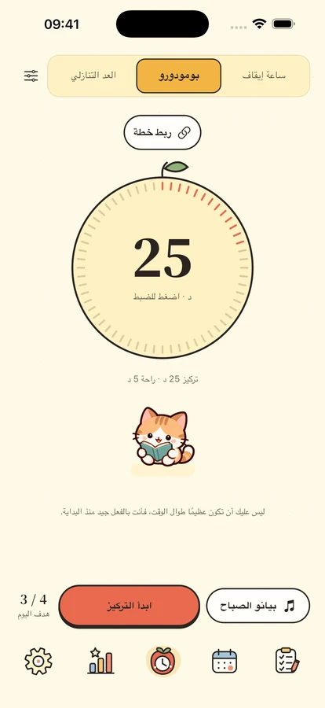
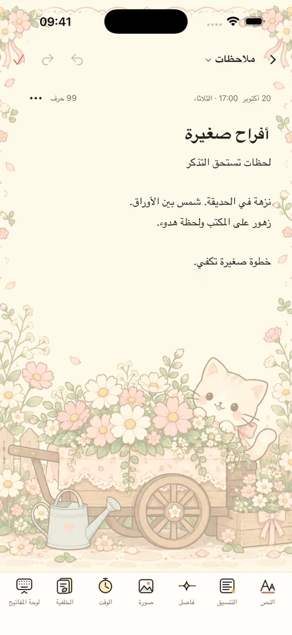

مصفوفة أيزنهاور ومؤقت بومودورو
رتّب خططك، وركّز على شيء واحد، واحتفظ بأفكارك ومواعيدك المهمة مع أصدقاء صغار.
متوفر لأجهزة iPhone وiPad

شيء واحد في كل مرة.
ابدأ بخطوة صغيرة
مساحة لخططك ووقتك وقليل من التشجيع.

مكان مناسب لكل خطة.
افصل المهم عن العاجل بأربعة أرباع. تابع اليوم والأسبوع والشهر عبر التقويم والخط الزمني، مع التكرار والمهام الفرعية والتذكيرات المحلية.
وقت لما أمامك الآن.
بومودورو وعدّ تنازلي وساعة إيقاف، مع 8 مقطوعات بلا إنترنت و11 صوتًا محيطيًا. أربعة أصدقاء وساعة قلّابة لوقت التركيز والراحة. المكتبة الكاملة تتطلب Plus أو تجربة ثلاثة أيام؛ تبقى مقطوعة واحدة وصوت محيطي واحد والصمت مجانية. Plus: أنماط الساعة · أنماط الويدجت · إحصاءات متقدمة · قوالب الخطط · نسخ سحابي تلقائي · سجل النسخ الاحتياطي.



احتفظ بالأفكار والأيام المهمة.
مذكرات بنص منسق وصور وأوراق، تُراجع حسب التاريخ أو الفئة. انتظر أعياد الميلاد والمناسبات بالعدّ التنازلي. أدوات الخطط والتقويم والتركيز والمناسبات والمذكرات تتطلب iOS 17 أو أحدث.
يومياتك ملك لك.
استخدم الميزات المحلية بلا حساب. النسخ السحابي يدوي وتحليلات الاستخدام معطلة افتراضيًا. صدّر المحتوى وتحكم في الخصوصية واحذف حسابك عند الحاجة.
الخصوصية